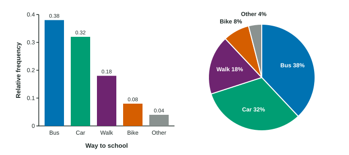

A frequency table holds the facts; a graph lets a reader see them at a glance. For one categorical variable there are two standard graphs, the bar chart and the pie chart. Both are easy to draw. Both are also easy to draw badly, so this page is as much about reading graphs critically as about making them.
Bar charts
A bar chart has one bar for each category. The height of the bar is the category’s count or relative frequency. Three rules keep it honest:
- The vertical axis starts at 0. Readers compare heights, so heights must be measured from 0.
- Bars have equal widths and gaps between them. The gaps say "these are separate categories", not a number line.
- Label both axes: the variable under the bars, and "Count" or "Relative frequency" up the side.
Categories have no number order, so the bars can go in any order. Sorting them from tallest to shortest often makes comparisons easier.

Pie charts
A pie chart cuts a circle into slices, one per category, each slice sized by its relative frequency. A slice that is a quarter of the circle stands for 25% of the individuals.
A pie chart only makes sense when the slices make up one whole: every individual is in exactly one category, and the relative frequencies add to 1. A survey that says "check every club you belong to" fails this test, because one student can be in three slices at once.
Pie charts show how parts make up a whole. They are poor for comparing categories of similar size: slices of 21% and 24% look nearly the same, while bars of 0.21 and 0.24 side by side are easy to tell apart.
| Bar chart | Pie chart | |
|---|---|---|
| Shows | count or relative frequency as a height | relative frequency as a slice of a circle |
| Needs | an axis starting at 0 | categories that make one whole |
| Best for | comparing categories | showing parts of a whole |
Reading a bar chart
Read the values and say what they show. A random sample of 200 teens named their favorite kind of film. A bar chart of relative frequencies shows comedy 0.30, action 0.25, drama 0.15, horror 0.12, documentaries 0.08 and other 0.10.
Most common: comedy, the tallest bar, at 0.30.
A count: action is teens.
A comparison: comedy (0.30) was chosen twice as often as drama (0.15).
A trap: "most teens prefer comedy" is wrong, because 0.30 is less than half.
In context: "Comedy was the most common favorite among the 200 teens surveyed, chosen by 30%, followed by action at 25%."
Spotting a misleading graph
A report shows pass rates of 52% at school A and 58% at school B, but its vertical axis runs from 50% to 60%. Above the axis, A’s bar is points tall and B’s is points tall, so B looks four times as tall. In fact 58% is only about 1.1 times 52%. The honest description is "6 percentage points higher". Always check where the axis starts before you believe a bar chart.
A second trap is comparing bar charts of counts from groups of different sizes. A school of 900 students will have taller bars than a school of 300 even if students at both choose in exactly the same way. Graph relative frequencies instead, and then the bars compare the schools fairly.